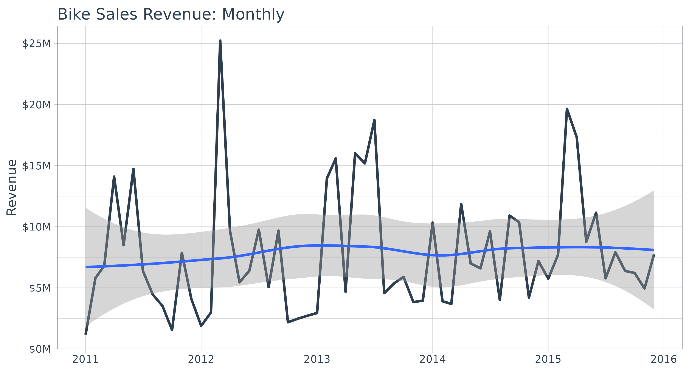
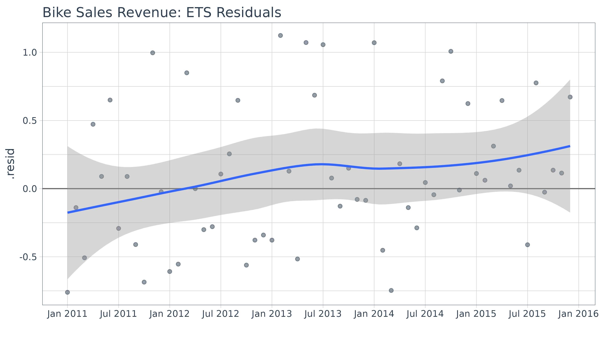
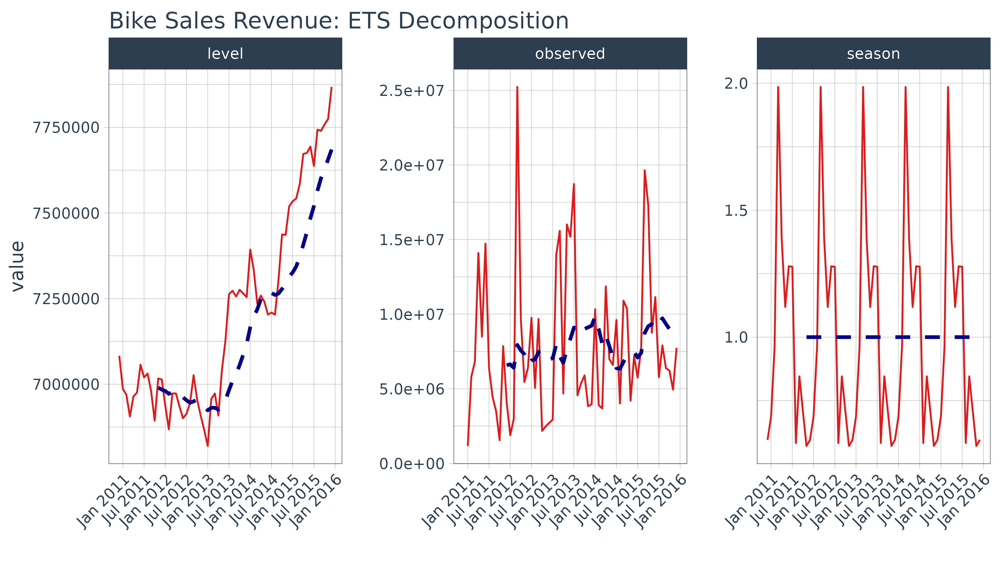
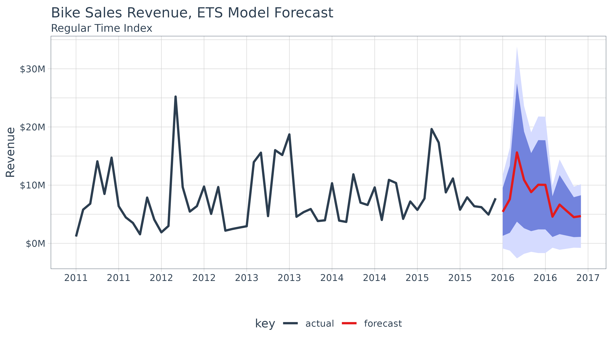
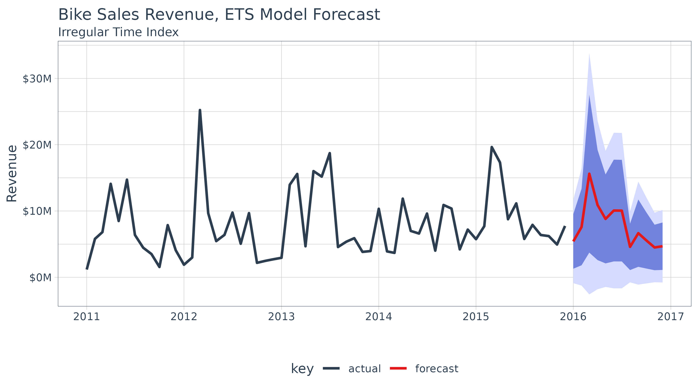

Introduction to sweep
Matt Dancho
2026-03-17
Source:vignettes/SW00_Introduction_to_sweep.Rmd
SW00_Introduction_to_sweep.RmdExtending
broomto time series forecasting
The sweep package extends the broom tools
(tidy, glance, and augment) for performing forecasts and time series
analysis in the “tidyverse”. The package is geared towards the workflow
required to perform forecasts using Rob Hyndman’s forecast
package, and contains the following elements:
model tidiers:
sw_tidy,sw_glance,sw_augment,sw_tidy_decompfunctions extendtidy,glance, andaugmentfrom thebroompackage specifically for models (ets(),Arima(),bats(), etc) used for forecasting.forecast tidier:
sw_sweepconverts aforecastobject to a tibble that can be easily manipulated in the “tidyverse”.
To illustrate, let’s take a basic forecasting workflow starting from data collected in a tibble format and then performing a forecast to achieve the end result in tibble format.
Forecasting Monthly Bike Sales Revenue
We’ll use the bike_sales data set that ships with
sweep and aggregate it to monthly revenue. This gives us a
local, reproducible series with both seasonality and trend.
monthly_sales_tbl <- bike_sales %>%
dplyr::mutate(date = lubridate::floor_date(order.date, unit = "month")) %>%
dplyr::group_by(date) %>%
dplyr::summarise(price = sum(price.ext), .groups = "drop")
monthly_sales_tbl## # A tibble: 60 × 2
## date price
## <date> <dbl>
## 1 2011-01-01 1165365
## 2 2011-02-01 5794945
## 3 2011-03-01 6811655
## 4 2011-04-01 14097770
## 5 2011-05-01 8488650
## 6 2011-06-01 14725405
## 7 2011-07-01 6382930
## 8 2011-08-01 4456670
## 9 2011-09-01 3505000
## 10 2011-10-01 1548640
## # ℹ 50 more rowsWe can quickly visualize using the ggplot2 package. We
can see that there appears to be some seasonality and an upward
trend.
monthly_sales_tbl %>%
ggplot(aes(x = date, y = price)) +
geom_line(linewidth = 1, color = palette_light()[[1]]) +
geom_smooth(method = "loess") +
labs(title = "Bike Sales Revenue: Monthly", x = "", y = "Revenue") +
scale_y_continuous(labels = scales::label_dollar(scale = 1 / 1000000, suffix = "M")) +
scale_x_date(date_breaks = "1 year", date_labels = "%Y") +
theme_tq()## `geom_smooth()` using formula = 'y ~ x'
Forecasting Workflow
The forecasting workflow involves a few basic steps:
- Step 1: Coerce to a
tsobject class. - Step 2: Apply a model (or set of models)
- Step 3: Forecast the models (similar to predict)
- Step 4: Use
sw_sweep()to tidy the forecast.
Note that we purposely omit other steps such as testing the
series for stationarity (Box.test(type = "Ljung")) and
analysis of autocorrelations (Acf, Pacf) for
brevity purposes. We recommend the analyst to follow the forecasting
workflow in “Forecasting: principles
and practice”
Step 1: Coerce to a ts object class
The forecast package uses the ts data
structure, which is quite a bit different than tibbles that we are
currently using. Fortunately, it’s easy to get to the correct structure
with tk_ts() from the timetk package. The
start and freq variables are required for the
regularized time series (ts) class, and these specify how
to treat the time series. For monthly, the frequency should be specified
as 12. This results in a nice calendar view. The
silent = TRUE tells the tk_ts() function to
skip the warning notifying us that the “date” column is being dropped.
Non-numeric columns must be dropped for ts class, which is
matrix based and a homogeneous data class.
monthly_sales_ts <- tk_ts(monthly_sales_tbl, start = 2011, freq = 12, silent = TRUE)
monthly_sales_ts## Jan Feb Mar Apr May Jun Jul Aug
## 2011 1165365 5794945 6811655 14097770 8488650 14725405 6382930 4456670
## 2012 1889200 2980110 25227175 9665115 5451530 6394690 9758130 5058110
## 2013 2936430 13956420 15584435 4674935 16013425 15182715 18724435 4562175
## 2014 10331390 3901295 3678090 11862535 6990325 6596090 9613175 4013970
## 2015 5745235 7706725 19645635 17314555 8753325 11146845 5778445 7906480
## Sep Oct Nov Dec
## 2011 3505000 1548640 7863725 4081460
## 2012 9678210 2177455 2472045 2711705
## 2013 5358180 5896440 3827600 3953565
## 2014 10907310 10365720 4204590 7190935
## 2015 6377295 6211815 4938465 7740870A significant benefit is that the resulting ts object
maintains a “timetk index”, which will help with forecasting dates
later. We can verify this using has_timetk_idx() from the
timetk package.
has_timetk_idx(monthly_sales_ts)## [1] TRUENow that a time series has been coerced, let’s proceed with modeling.
Step 2: Modeling a time series
The modeling workflow takes a time series object and applies a model.
Nothing new here: we’ll simply use the ets() function from
the forecast package to get an Exponential Smoothing ETS
(Error, Trend, Seasonal) model.
Where sweep can help is in the evaluation of a model.
Expanding on the broom package there are four
functions:
-
sw_tidy(): Returns a tibble of model parameters -
sw_glance(): Returns the model accuracy measurements -
sw_augment(): Returns the fitted and residuals of the model -
sw_tidy_decomp(): Returns a tidy decomposition from a model
The guide below shows which model object compatibility with
sweep tidier functions.
| Object | sw_tidy() | sw_glance() | sw_augment() | sw_tidy_decomp() | sw_sweep() |
|---|---|---|---|---|---|
| ar | |||||
| arima | X | X | X | ||
| Arima | X | X | X | ||
| ets | X | X | X | X | |
| baggedETS | |||||
| bats | X | X | X | X | |
| tbats | X | X | X | X | |
| nnetar | X | X | X | ||
| stl | X | ||||
| HoltWinters | X | X | X | X | |
| StructTS | X | X | X | X | |
| tslm | X | X | X | ||
| decompose | X | ||||
| adf.test | X | X | |||
| Box.test | X | X | |||
| kpss.test | X | X | |||
| forecast | X |
Going through the tidiers, we can get useful model
information.
sw_tidy
sw_tidy() returns the model parameters.
sw_tidy(fit_ets)## # A tibble: 14 × 2
## term estimate
## <chr> <dbl>
## 1 alpha 1.79e-2
## 2 gamma 1.00e-4
## 3 l 7.08e+6
## 4 s0 5.95e-1
## 5 s1 5.71e-1
## 6 s2 7.07e-1
## 7 s3 8.46e-1
## 8 s4 5.83e-1
## 9 s5 1.28e+0
## 10 s6 1.28e+0
## 11 s7 1.12e+0
## 12 s8 1.39e+0
## 13 s9 1.99e+0
## 14 s10 9.64e-1sw_glance
sw_glance() returns the model quality parameters.
sw_glance(fit_ets)## # A tibble: 1 × 12
## model.desc sigma logLik AIC BIC ME RMSE MAE MPE MAPE MASE
## <chr> <dbl> <dbl> <dbl> <dbl> <dbl> <dbl> <dbl> <dbl> <dbl> <dbl>
## 1 ETS(M,N,M) 0.594 -1026. 2083. 2114. 686483. 4038152. 2.95e6 -20.0 49.5 0.561
## # ℹ 1 more variable: ACF1 <dbl>sw_augment
sw_augment() returns the actual, fitted and residual
values.
augment_fit_ets <- sw_augment(fit_ets)
augment_fit_ets## # A tibble: 60 × 4
## index .actual .fitted .resid
## <yearmon> <dbl> <dbl> <dbl>
## 1 Jan 2011 1165365 4872020. -0.761
## 2 Feb 2011 5794945 6731901. -0.139
## 3 Mar 2011 6811655 13836628. -0.508
## 4 Apr 2011 14097770 9574494. 0.472
## 5 May 2011 8488650 7790402. 0.0896
## 6 Jun 2011 14725405 8922332. 0.650
## 7 Jul 2011 6382930 9013625. -0.292
## 8 Aug 2011 4456670 4091929. 0.0891
## 9 Sep 2011 3505000 5944932. -0.410
## 10 Oct 2011 1548640 4933041. -0.686
## # ℹ 50 more rowsWe can review the residuals to determine if their are any underlying
patterns left. Note that the index is class yearmon, which
is a regularized date format.
augment_fit_ets %>%
ggplot(aes(x = index, y = .resid)) +
geom_hline(yintercept = 0, color = "grey40") +
geom_point(color = palette_light()[[1]], alpha = 0.5) +
geom_smooth(method = "loess") +
scale_x_yearmon(n = 10) +
labs(title = "Bike Sales Revenue: ETS Residuals", x = "") +
theme_tq()## `geom_smooth()` using formula = 'y ~ x'
sw_tidy_decomp
sw_tidy_decomp() returns the decomposition of the ETS
model.
decomp_fit_ets <- sw_tidy_decomp(fit_ets)
decomp_fit_ets ## # A tibble: 61 × 4
## index observed level season
## <yearmon> <dbl> <dbl> <dbl>
## 1 Dec 2010 NA 7083284. 0.595
## 2 Jan 2011 1165365 6986708. 0.688
## 3 Feb 2011 5794945 6969282. 0.964
## 4 Mar 2011 6811655 6905871. 1.99
## 5 Apr 2011 14097770 6964339. 1.39
## 6 May 2011 8488650 6975525. 1.12
## 7 Jun 2011 14725405 7056830. 1.28
## 8 Jul 2011 6382930 7019920. 1.28
## 9 Aug 2011 4456670 7031134. 0.583
## 10 Sep 2011 3505000 6979419. 0.845
## # ℹ 51 more rowsWe can review the decomposition using ggplot2 as well.
The data will need to be manipulated slightly for the facet
visualization. The gather() function from the
tidyr package is used to reshape the data into a long
format data frame with column names “key” and “value” indicating all
columns except for index are to be reshaped. The “key” column is then
mutated using mutate() to a factor which preserves the
order of the keys so “observed” comes first when plotting.
decomp_fit_ets %>%
tidyr::gather(key = key, value = value, -index) %>%
dplyr::mutate(key = as.factor(key)) %>%
ggplot(aes(x = index, y = value, group = key)) +
geom_line(color = palette_light()[[2]]) +
geom_ma(ma_fun = SMA, n = 12, size = 1) +
facet_wrap(~ key, scales = "free_y") +
scale_x_yearmon(n = 10) +
labs(title = "Bike Sales Revenue: ETS Decomposition", x = "") +
theme_tq() +
theme(axis.text.x = element_text(angle = 45, hjust = 1))## Warning: Using `size` aesthetic for lines was deprecated in ggplot2 3.4.0.
## ℹ Please use `linewidth` instead.
## ℹ The deprecated feature was likely used in the tidyquant package.
## Please report the issue at
## <https://github.com/business-science/tidyquant/issues>.
## This warning is displayed once per session.
## Call `lifecycle::last_lifecycle_warnings()` to see where this warning was
## generated.## Warning: Removed 1 row containing missing values or values outside the scale range
## (`geom_line()`).
Under normal circumstances it would make sense to refine the model at this point. However, in the interest of showing capabilities (rather than how to forecast) we move onto forecasting the model. For more information on how to forecast, please refer to the online book “Forecasting: principles and practices”.
Step 3: Forecasting the model
Next we forecast the ETS model using the forecast()
function. The returned forecast object isn’t in a “tidy”
format (i.e. data frame). This is where the sw_sweep()
function helps.
Step 4: Tidy the forecast object
We’ll use the sw_sweep() function to coerce a
forecast into a “tidy” data frame. The
sw_sweep() function then coerces the forecast
object into a tibble that can be sent to ggplot for
visualization. Let’s inspect the result.
sw_sweep(fcast_ets, fitted = TRUE)## # A tibble: 132 × 7
## index key price lo.80 lo.95 hi.80 hi.95
## <yearmon> <chr> <dbl> <dbl> <dbl> <dbl> <dbl>
## 1 Jan 2011 actual 1165365 NA NA NA NA
## 2 Feb 2011 actual 5794945 NA NA NA NA
## 3 Mar 2011 actual 6811655 NA NA NA NA
## 4 Apr 2011 actual 14097770 NA NA NA NA
## 5 May 2011 actual 8488650 NA NA NA NA
## 6 Jun 2011 actual 14725405 NA NA NA NA
## 7 Jul 2011 actual 6382930 NA NA NA NA
## 8 Aug 2011 actual 4456670 NA NA NA NA
## 9 Sep 2011 actual 3505000 NA NA NA NA
## 10 Oct 2011 actual 1548640 NA NA NA NA
## # ℹ 122 more rowsThe tibble returned contains “index”, “key” and “value” (or in this
case “price”) columns in a long or “tidy” format that is ideal for
visualization with ggplot2. The “index” is in a regularized
format (in this case yearmon) because the
forecast package uses ts objects. We’ll see
how we can get back to the original irregularized format (in this case
date) later. The “key” and “price” columns contains three
groups of key-value pairs:
- actual: the actual values from the original data
-
fitted: the model values returned from the
ets()function (excluded by default) -
forecast: the predicted values from the
forecast()function
The sw_sweep() function contains an argument
fitted = FALSE by default meaning that the model “fitted”
values are not returned. We can toggle this on if desired. The remaining
columns are the forecast confidence intervals (typically 80 and 95, but
this can be changed with forecast(level = c(80, 95))).
These columns are setup in a wide format to enable using the
geom_ribbon().
Let’s visualize the forecast with ggplot2. We’ll use a
combination of geom_line() and geom_ribbon().
The fitted values are toggled off by default to reduce the complexity of
the plot, but these can be added if desired. Note that because we are
using a regular time index of the yearmon class, we need to
add scale_x_yearmon().
sw_sweep(fcast_ets) %>%
ggplot(aes(x = index, y = price, color = key)) +
geom_ribbon(aes(ymin = lo.95, ymax = hi.95),
fill = "#D5DBFF", color = NA, linewidth = 0) +
geom_ribbon(aes(ymin = lo.80, ymax = hi.80, fill = key),
fill = "#596DD5", color = NA, linewidth = 0, alpha = 0.8) +
geom_line(linewidth = 1) +
labs(title = "Bike Sales Revenue, ETS Model Forecast", x = "", y = "Revenue",
subtitle = "Regular Time Index") +
scale_y_continuous(labels = scales::label_dollar(scale = 1 / 1000000, suffix = "M")) +
scale_x_yearmon(n = 12, format = "%Y") +
scale_color_tq() +
scale_fill_tq() +
theme_tq() ## Warning: Removed 60 rows containing missing values or values outside the scale range
## (`geom_ribbon()`).
## Removed 60 rows containing missing values or values outside the scale range
## (`geom_ribbon()`).
Because the ts object was created with the
tk_ts() function, it contained a timetk index that was
carried with it throughout the forecasting workflow. As a result, we can
use the timetk_idx argument, which maps the original
irregular index (dates) and a generated future index to the regularized
time series (yearmon). This results in the ability to return an index of
date and datetime, which is not currently possible with the
forecast objects. Notice that the index is returned as
date class.
## Warning in .check_tzones(e1, e2): 'tzone' attributes are inconsistent## # A tibble: 6 × 7
## index key price lo.80 lo.95 hi.80 hi.95
## <date> <chr> <dbl> <dbl> <dbl> <dbl> <dbl>
## 1 2011-01-01 actual 1165365 NA NA NA NA
## 2 2011-02-01 actual 5794945 NA NA NA NA
## 3 2011-03-01 actual 6811655 NA NA NA NA
## 4 2011-04-01 actual 14097770 NA NA NA NA
## 5 2011-05-01 actual 8488650 NA NA NA NA
## 6 2011-06-01 actual 14725405 NA NA NA NA## Warning in .check_tzones(e1, e2): 'tzone' attributes are inconsistent## # A tibble: 6 × 7
## index key price lo.80 lo.95 hi.80 hi.95
## <date> <chr> <dbl> <dbl> <dbl> <dbl> <dbl>
## 1 2016-07-01 forecast 10050244. 2385587. -1671837. 17714901. 21772325.
## 2 2016-08-01 forecast 4586811. 1087995. -764167. 8085627. 9937789.
## 3 2016-09-01 forecast 6653105. 1577021. -1110096. 11729189. 14416305.
## 4 2016-10-01 forecast 5561120. 1317262. -929300. 9804977. 12051539.
## 5 2016-11-01 forecast 4494948. 1063975. -752272. 7925920. 9742167.
## 6 2016-12-01 forecast 4684854. 1108152. -785239. 8261557. 10154948.We can build the same plot with dates in the x-axis now.
sw_sweep(fcast_ets, timetk_idx = TRUE) %>%
ggplot(aes(x = index, y = price, color = key)) +
geom_ribbon(aes(ymin = lo.95, ymax = hi.95),
fill = "#D5DBFF", color = NA, linewidth = 0) +
geom_ribbon(aes(ymin = lo.80, ymax = hi.80, fill = key),
fill = "#596DD5", color = NA, linewidth = 0, alpha = 0.8) +
geom_line(linewidth = 1) +
labs(title = "Bike Sales Revenue, ETS Model Forecast", x = "", y = "Revenue",
subtitle = "Irregular Time Index") +
scale_y_continuous(labels = scales::label_dollar(scale = 1 / 1000000, suffix = "M")) +
scale_x_date(date_breaks = "1 year", date_labels = "%Y") +
scale_color_tq() +
scale_fill_tq() +
theme_tq() ## Warning in .check_tzones(e1, e2): 'tzone' attributes are inconsistent## Warning: Removed 60 rows containing missing values or values outside the scale range
## (`geom_ribbon()`).
## Removed 60 rows containing missing values or values outside the scale range
## (`geom_ribbon()`).
In this example, there is not much benefit to returning an irregular time series. However, when working with frequencies below monthly, the ability to return irregular index values becomes more apparent.